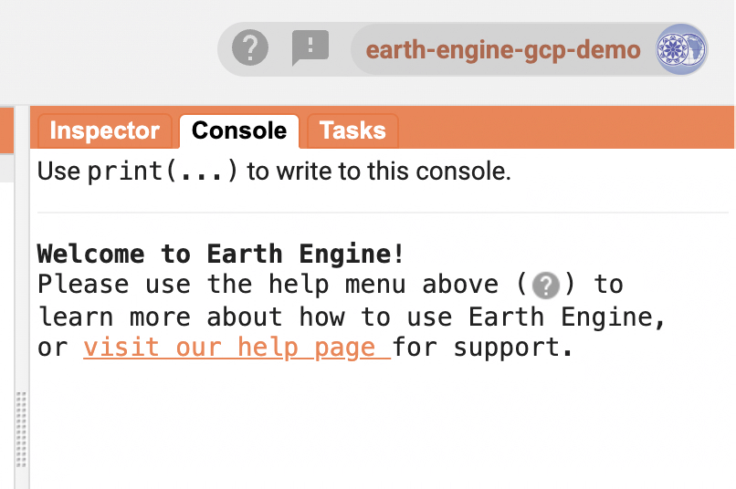

Getting Started with Google Earth Engine on Google Cloud
A Student Guide to Creating a GCP Project, Registering it for Earth Engine, and Enabling the API
🧭 Introduction
Google Earth Engine (GEE) is a powerful geospatial analysis platform that allows you to analyze and visualize satellite data at scale using cloud computing. When combined with Google Cloud Platform (GCP), it offers:
- 🔓 Access to the full Earth Engine REST API and Python client
- 📁 Better project-level organization of scripts, resources, and datasets
- 👥 Support for secure, collaborative development environments
If you're a student, you're eligible to create GCP projects specifically for Earth Engine — even without a billing account. These GCP projects:
✅ Allow access to the full GEE Python and REST APIs ✅ Are free for noncommercial academic use ✅ Do not require billing ❌ Cannot be used with other Google Cloud APIs that require billing
This tutorial walks you through:
- Creating a new GCP project
- Registering the project for noncommercial use
- Enabling the Earth Engine API
- Verifying access to the Earth Engine Code Editor and APIs
🧑💻 Step 1: Sign In and Create a New GCP Project
Go to the Google Cloud Console
Click the project dropdown in the top toolbar
Click "Register a new Cloud Project" under your account menu:

In the New Project screen, fill in:
- Project Name: e.g.,
Earth Engine GCP Demo - Location: e.g.,
GEE Student Projects

- Project Name: e.g.,
Click Create
You’ll see a success notification:

📝 Step 2: Register the Project for Earth Engine Use
Once your GCP project is created, you need to register it with Earth Engine.
Navigate to the Earth Engine Configuration panel: https://console.cloud.google.com/earthengine
If prompted, click Register under the Manage Registration tab:

Fill in the noncommercial eligibility form:
- Institution name (e.g., Stanford University)
- Confirm that you will not receive commercial payment
- Select Scientific Research as your use case
- Enter a research question (e.g., Human settlement and mobility)
- Choose Global scope
- Indicate whether you've previously published using Earth Engine
✅ You'll see a note that confirms your eligibility:

Click Next to complete the registration.
🔓 Step 3: Enable the Earth Engine API
After registration, you’ll need to enable the Earth Engine API in your project.
If you see this prompt, click Enable:

Wait a few seconds until the status changes to enabled.
✅ Step 4: Confirm Your Registration
After enabling the API, you should see a message confirming that you're registered for noncommercial use:

You can now access:
- The Earth Engine Code Editor: https://code.earthengine.google.com
- The Python and REST APIs from Jupyter, Colab, or your local environment
To confirm your access, open the Earth Engine Code Editor and check the Console tab for the welcome message:

🚀 You’re Ready to Go!
You now have:
- A GCP project set up specifically for Earth Engine
- Earth Engine API enabled
- Access to GEE’s Python and REST interfaces
You can now start building and running geospatial analyses using Earth Engine in:
- Python (via
earthengine-api) - Google Colab or Jupyter Notebooks
- Earth Engine Code Editor (for JavaScript scripting)
🧠 Tips for Students
- No billing needed: These projects are sandboxed for Earth Engine only
- Use GCP Projects to organize your work: One project per class or research study is a good practice
- Need collaboration?: Add collaborators under IAM settings of your GCP project
- Run out of projects?: You can request more quota if you need more than 10 (default limit)